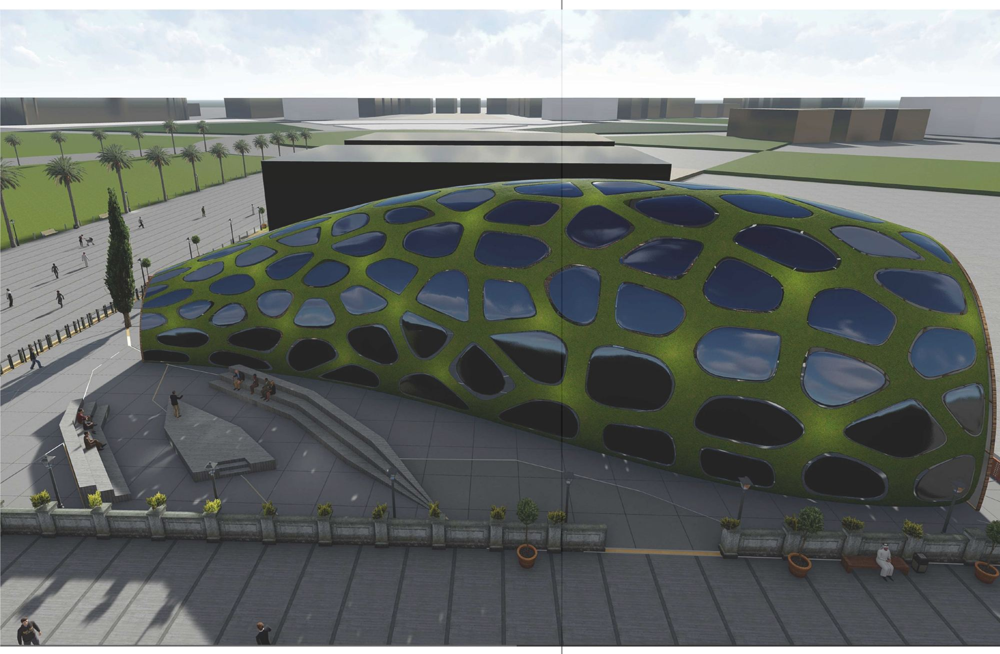
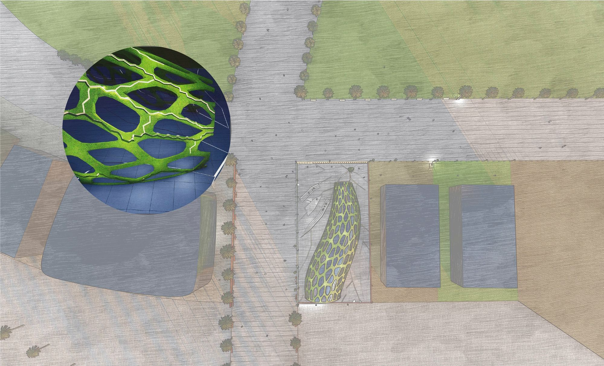

Projects / 15
Iran Expo Pavilion
Iran conceptual pavilion for Expo 2020 Dubai
The Expo theme was “Connecting Minds, Creating the Future”. The team began with very different ideas and looked for what they shared. The answer was the tree, and above all its roots: many and different, deep and shallow, old and young, all working to keep one tree alive.
Design
The tree is the cedar carved on the walls of Persepolis about 500 BC. It bears no fruit, so it is called free, and it stands for freedom in Iranian culture. Its roots spread across the whole site and continue inside the building.
Details
The structure takes its logic from fine bone tissue, which is light and strong. It would be printed in large parts from a filament of bamboo mixed with PLA or PHA, stacked to form the shell, with the smell and touch of wood. Inside, tree-like supports take the place of ordinary walls, and solar panels on the shell power the building.
Connecting minds, creating the future
The Expo theme was “Connecting Minds, Creating the Future”. The team began with very different ideas and looked for what they shared. The answer was the tree, and above all its roots: many and different, deep and shallow, old and young, all working to keep one tree alive.

The free tree
The tree is the cedar carved on the walls of Persepolis about 500 BC. It bears no fruit, so it is called free, and it stands for freedom in Iranian culture. Its roots spread across the whole site and continue inside the building.

Structure and material
The structure takes its logic from fine bone tissue, which is light and strong. It would be printed in large parts from a filament of bamboo mixed with PLA or PHA, stacked to form the shell, with the smell and touch of wood. Inside, tree-like supports take the place of ordinary walls, and solar panels on the shell power the building.
In Iranian architecture decoration usually sits on the building as a final shell. Here the team looked instead at the roots of plants and travelled inside them: the result is a porous, skeleton-like structure made with 3D printing. Inside, the supports open their way slowly and patiently, like a river that splits the heart of a stone or a bud that blooms through it.
Process
In Iranian architecture decoration usually sits on the building as a final shell. Here the team looked instead at the roots of plants and travelled inside them: the result is a porous, skeleton-like structure made with 3D printing. Inside, the supports open their way slowly and patiently, like a river that splits the heart of a stone or a bud that blooms through it.